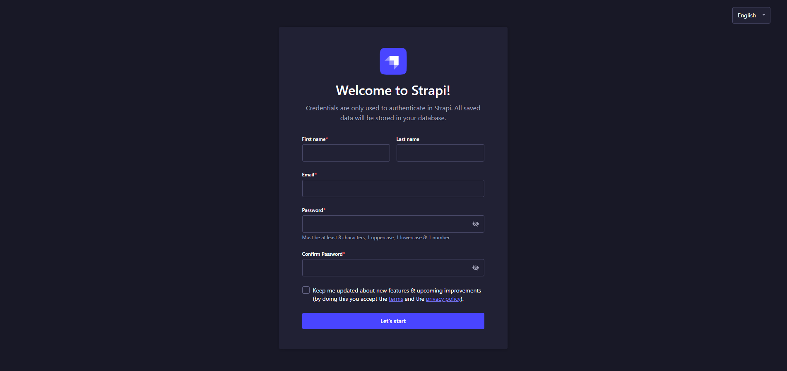
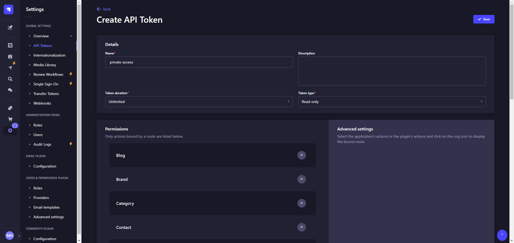
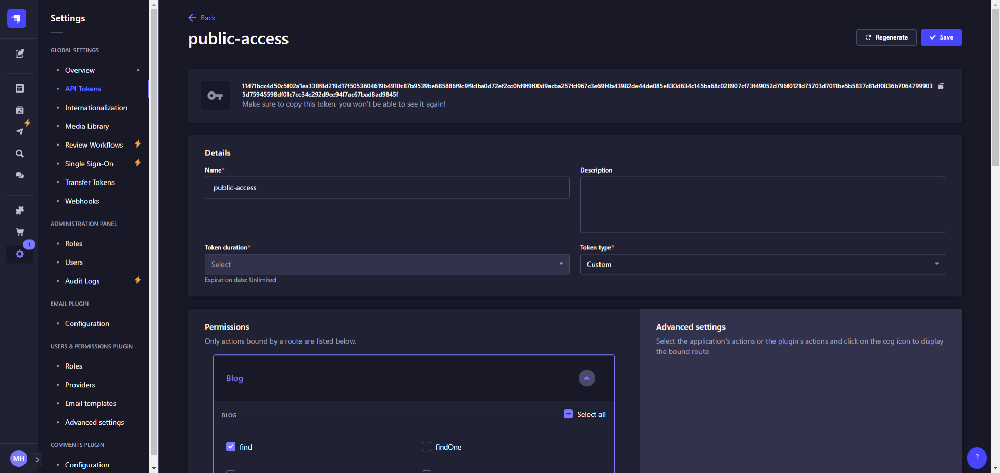
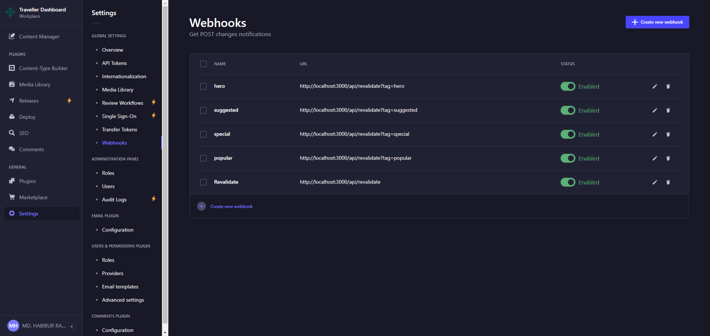
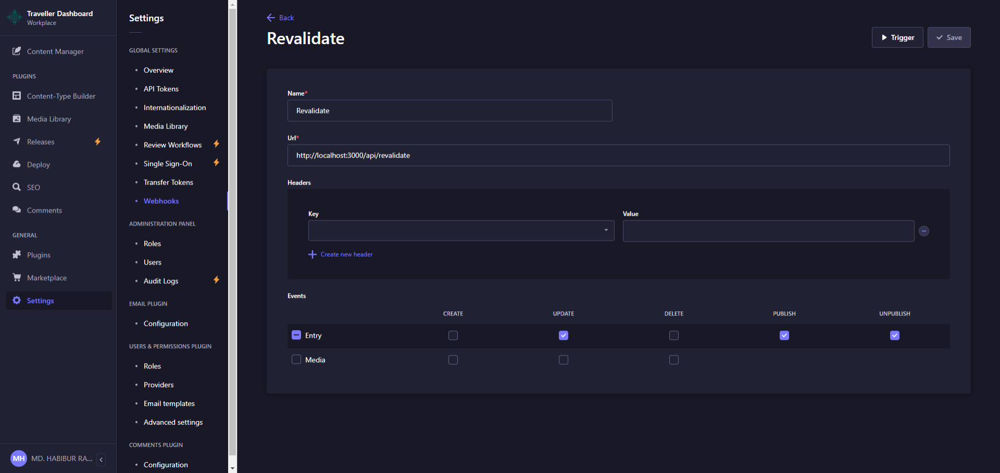

1. Introduction
Welcome to Traveller, a modern, responsive website template built with Next.js for the frontend and Strapi CMS for the backend. This documentation will guide you through setting up, running, customizing, and deploying your website.
-
Frontend: Powered by Next.js, providing lightning-fast performance and SEO optimization.
-
Backend: Managed through Strapi, offering a flexible headless CMS to manage your content.
2. Folder Structure
The project is structured as follows:
/traveller
├── /frontend # Next.js project folder (frontend code)
├── /backend # Strapi project folder (backend code)
├── /docs # Documentation files
- frontend/: Contains the Next.js code for rendering the website's UI.
- backend/: Contains the Strapi CMS code for managing content.
- docs/: Any related documentation, including this guide.
3. Prerequisites
Before starting, ensure you have the following installed on your system:
- Node.js (v14.x or higher)
- Yarn or npm
- Git (for deployment purposes)
- A Database (postgreSQL)
4. Installation Guide
1. Downloading the Source Code
-
Unzip the source code: Extract the provided .zip file to a folder on your machine.
-
Navigate to the project folder:
cd traveller
2. Setting up the Strapi Backend
-
Navigate to the backend directory:
cd backend -
Install the backend dependencies:
yarn install # or npm install -
Configure the environment:
-
Copy the .env.example file to .env:
cp .env.example .env -
Open the .env file and set up your database connection and other environment variables. Example for postgress:
DATABASE_CLIENT=postgres DATABASE_HOST=localhost DATABASE_PORT=5432 DATABASE_NAME=traveller DATABASE_USERNAME=postgres DATABASE_PASSWORD=AGGDEQAGv DATABASE_SSL=false
-
-
Run Strapi in development mode:
yarn dev # or npm run devYou can now access the Strapi admin panel at http://localhost:1337/admin.
-
Register on admin panel 
-
Add settings and data:
-
open another terminal on backend file location. then run this command
yarn strapi import -f /your-file-path/strapi-export.tar.gz #or yarn strapi transfer --from https://traveller-4xej.onrender.com/admin --from-token 9d2695270d916fac0d39ed590e337a260e74da90e4c1c577c006fbe70575e555d5c672997b73f2f40c326e88039358ef2b5393c183b0b09c41b043380293bbd24b6b3c9ad2c590a6dd46cf07b7d4564db1d0d9145ea36c8853a62cfbd6c9b6efc30a450cc62abe2c3da3fa2230581699c17230121e2871b0605a78ca9a865480 --forcewait for complete data transfer. it will add all default settings and data.
-
3. Setting up the Next.js Frontend
-
Navigate to the frontend directory:
cd ../frontend -
Install the frontend dependencies:
yarn install # or npm install -
Configure environment variables:
- Copy the .env.example file to .env:
cp .env.example .env -
Open the .env file and set up all environment variables:
-
API_TOKEN: Navigate to the backend admin panel > settings > API Token > Create API Token. Set the token duration to unlimited and the token type to read-only.

-
NEXT_PUBLIC_API_TOKEN: Create another API token with a custom token type. Grant the following permissions: contact(create), subscriber(create), comments(findAllFlat, findAllHierarchy).

NEXT_PUBLIC_API_URL=http://localhost:1337 -
-
Run Next.js in development mode:
yarn dev # or npm run devYour frontend will be available at http://localhost:3000.
5. Running the Application
To run the application locally, follow these steps:
1. Start the Strapi Backend:
cd backend
yarn develop
This will start the backend server athttp://localhost:1337.
2. Start the Next.js Frontend:
cd frontend
yarn dev
This will start the frontend server at http://localhost:3000.
6. Webhooks
For performance optimization, we use Next.js tag caching system by default. To see updated content from the backend, you need to revalidate tags. This can be done by creating webhooks in Strapi. You should create five webhooks in total.

Creating Webhooks
Navigate to Settings > Webhooks > Create new webhook
-
Revalidate (most important):
- Name: revalidate (or any name you prefer)
- URL: http://www.your-front-end.com/api/revalidate
- Events: update, publish, unpublish
- Description: Most content will update in the frontend when you update, publish, or unpublish any content. This webhook doesn't need to be triggered manually.

-
Hero:
- URL: http://www.your-front-end.com/api/revalidate?tag=hero
- Description: Trigger this webhook to update your hero section.
-
Special:
- URL: http://www.your-front-end.com/api/revalidate?tag=special
- Description: Trigger this webhook to update special posts.
-
Popular:
- URL: http://www.your-front-end.com/api/revalidate?tag=popular
- Description: Trigger this webhook to update popular posts.
-
Suggested:
- URL: http://www.your-front-end.com/api/revalidate?tag=suggested
- Description: Trigger this webhook to update must-visit posts.
Note: For webhooks 2-5, you can set up appropriate events based on your content update frequency and requirements.
7. Deployment
1. Deploying the Backend (Strapi) with GitHub
Since you are working with source code instead of a Git repository, you'll need to push the frontend code to a new repository.
Step 1: Create a GitHub Repository for the Strapi Backend
- Sign in to GitHub or create an account.
- create a new repository (e.g., my-strapi-backend).
- Push the backend code:
cd backend
git init
git branch -M main
git remote add origin https://github.com/your-username/my-strapi-backend.git
git add .
git commit -m "Initial commit"
git push -u origin main
Step 2: Deploy on Heroku
- Sign in to Heroku and create a new app.
- Link the GitHub repository you just created.
- Set the environment variables in Heroku (e.g., DATABASE_URL for PostgreSQL).
- Deploy the Strapi backend. After deployment, access the Strapi admin panel at the Heroku-provided URL.
Step 3: Deploy on Railway (Alternative)
- Sign in to Railway and create a new project.
- Link the GitHub repository and deploy the Strapi backend.
- Configure the environment variables in Railway (e.g., database credentials, API keys).
2. Deploying the Frontend (Next.js) with GitHub
Step 1: Create a GitHub Repository
2.Sign in to GitHub and Create a new repository for your frontend (e.g., my-nextjs-frontend). 3. Push the frontend code to the new repository:
cd frontend
git init
git branch -M main
git remote add origin https://github.com/your-username/my-nextjs-frontend.git
git add .
git commit -m "Initial commit"
git push -u origin main
Step 2: Deploy on Vercel
- Go to Vercel and connect your GitHub account.
-
Create a new project by selecting the GitHub repository you just created.
-
Set the NEXT_PUBLIC_API_URL environment variable in the Vercel dashboard to point to your deployed Strapi backend.
- Deploy your project and access it via the Vercel-provided URL.